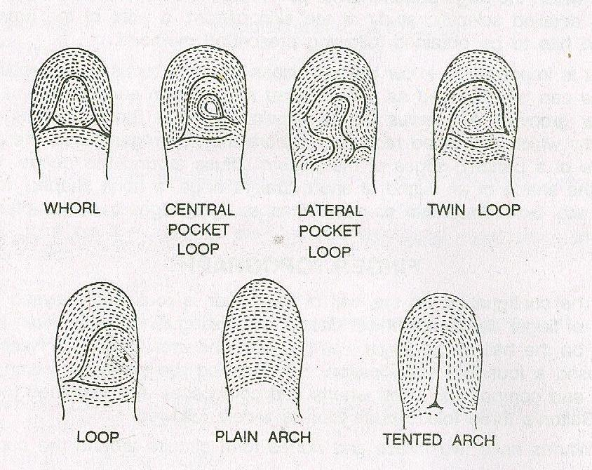

Shakshat Virtual Lab 
INDIAN INSTITUTE OF TECHNOLOGY GUWAHATI
Dermatoglyphics
Indian physical anthropologists have extensively used the dermatoglyphics as the tool for racial identification though almost all the works in this regard are descriptive in nature. P. C. Biswas has completed the work on dermatoglyphics on some sections of the criminals and also on the Bengalis and the Bhils of Raisthan. A number of scholars have shown interest in this sort of study and they have taken up the different communities according to their choice. In connection with the study on dermatoglyphics the names of following persons like B. B. Verma (the Uraon), S. C. Tiwari (on the Raji of Askote and the Bhotiya of Almorah), I. P. Sing Mongha (on the Panjabis), S. Gupta (on the Ulladan of Travancore), D. Roychoudhury (on the Riang of Tripura), R N. Bhattacharya (on the Abor tribes of N. E. F. A), M. R. Chakravorty (on the Nayandi and the Paniyan of South India), B. K. Chatterjee and Others (on the Urali of Travancore), P. Gupta and others (on the Lambadi of Andhra Pradesh), D. K. Sen ( on the criminal people in U. P), E. C. Buchi (on the Tebetan, Oraon, Andamanese and Khasi ) are important. S. S. Sarkar has made an attempt to discuss all the data on the dermatoglyphics in India and has seen the striking difference in ringer prints between the Australoids and other groups of people. In his study he has included the cases of the Juang, Savar, Santal, Khond, Gond, Pano, Munda and others. He has drawn his observation on the point that a ratio 60:40 between whorl and loop is the characteristic features of Veddids or Australoids, but it has been seriously criticised by Biswas as, according to him, this sort of ratio is not supported by sufficient investigation and, therefore, it should be used with considerable caution in ethnic identifcation. The study of Sarkar and others among the Kadars of Kerala indicates a striking similarity with the Semang as in both the groups the Australoid element is to be met with
Dermatoglyphics (derma, skin + glyphic, carve) is the study of the ridge patterns of the skin of the fingers, palms, toes and soles. The human body is covered with hairs and sebaceous (oil) glands except the palmar and planter regions which are continuously corrugated with narrow ridges. The ridges make certain patterns.
Dermatoglyphics patterns have long since been used for various purposes for their permanency and unchangeability throughout life. From the time of their formation in the foetus to the final disintegration of the skin after death the patterns remain unchanged. Of course, the ridges may be worn out and thus become invisible owing to various reasons. Though ever since the beginning of the Christian era finger patterns has been used for personal identification, yet systematic scientific studies started from the end of the nineteenth century. Uses of dermatoglyphic traits are manifold, but the anthropologists are more concerned in establishing variations in respect of traits among different human populations. However, the anthropologists are interested also in the study of dermatoglyphics in the context of twin diagnosis, paternity diagnosis, primatology, etc. Dermatoglyphics fulfill many of the conditions laid by Boyd for a good racial criterion. Dermatoglyphics traits are not modified by environmental factors. Dermatoglyphics traits are not – adaptive. These are not subjected to a high rate of mutation. Genetic process of Dermatoglyphic traits is complex and is not perfectly known. Ridges and patterns of the finger, palm, toes and soles are studied from different angles applying various methods. Here we shall deal with some aspects of finger patters. Finger patterns: Henry has classified the various finger patterns into four main types: Arches, Loops, True, Whorls and composites. The composites form a heterogeneous assemblage of patterns. Again, three types have been identified by Galton. His three types are: Arches, Loops, and Whorls. A loop may be open to the ulnar side or to the radial side and accordingly it is termed as ulnar or radial loop.
The classic and widely used notation is A= arches; Lr = radial loops; Lu= ulnar loops; and W= whorls.
The whorls possess two triradii, while only one triradius is present in loops. On the other hand triradius is absent in arches. Thus, generally speaking, the patters may be identified from the occurrence of triradius.

In general, loops are more frequent than whorls. Arches are found in small numbers. Again, of the two types of, ulnar loops is much more frequent than radial loops